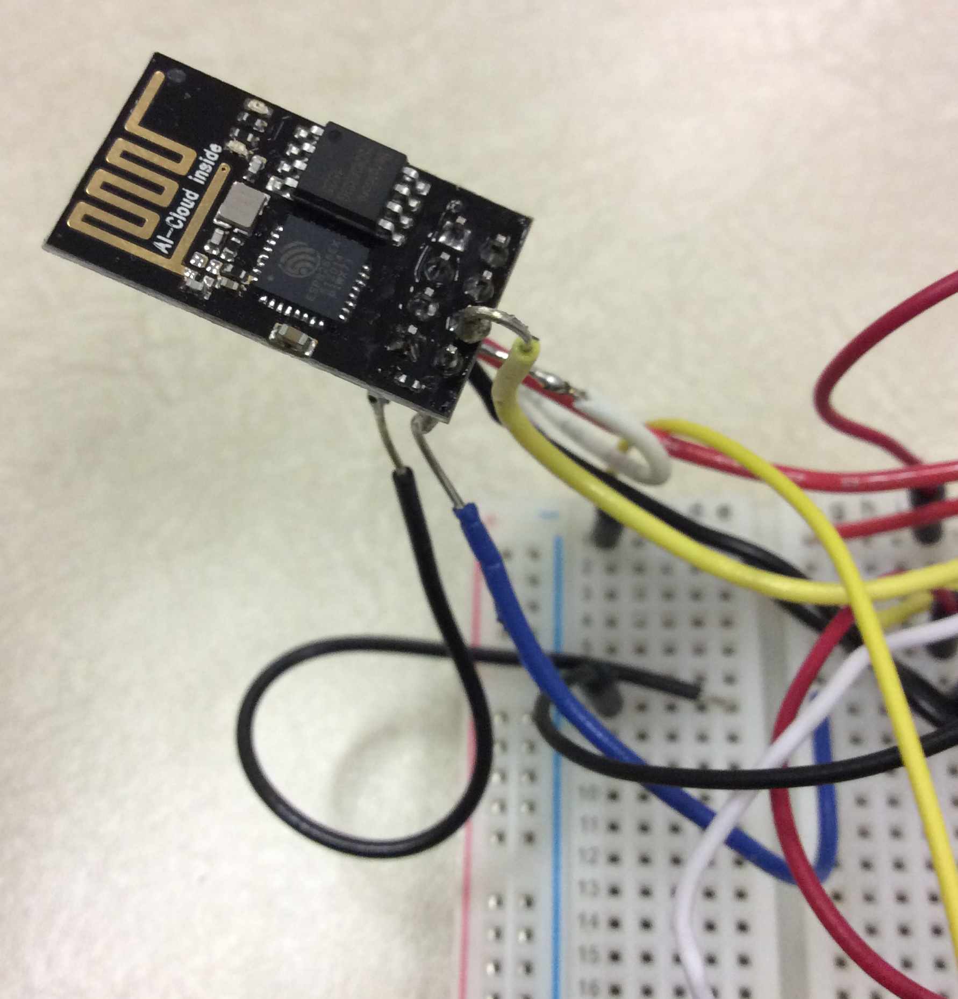

Updating the esp8266 firmware
While technically an optional step, it's quite difficult to get the esp8266 up and running smoothly without updating the firmware. This is a rather laborious and annoying process, especially if you don't have an FTDI. In any case, this is how I did it.
Hardware setup for updating
First, I had to connect wires to the esp8266. To do this, I soldered some wires to my esp8266. It's not the prettiest, but it works. It's probably easier to use a breakout board, or something like that.

After that, I had to connect it to a computer via USB. This meant splicing a USB cable to get to the RX and TX pins. The +5V and GND pins are plugged into the ardiuno's USB port power. This makes the ardiuno convert that 5v it gets into 3.3v. I powered the esp8266 from this.
[image of cable]
There are also some other pins that the esp8266 needs to be put into a flashing mode. HEre's a picture of the final wiring:
[image of final wiring]
For people who find it difficult to see how things are connected in just a picture, here's a table showing pins.
| Pin on esp8266/USB cable | Pin on Arduino/USB cable |
| esp8266 VCC | Arduino 3.3V |
| esp8266 RX | Voltage divider, then to [RX or TX] on the USB cable |
| Arduino USB Vin (5v) | USB cable 5V |
| esp8266 TX | USB cable [RX or TX] |
| esp8266 GND | Arduino GND |
| USB cable GND | Arduino GND |
Software
The software needed to update differs greatly from computer to computer. As a result, it's hard to cover all operating systems. Instead, here's some links to other sites explaining how to do this, in no particular order:
You should now be ready for the next step, hardware!